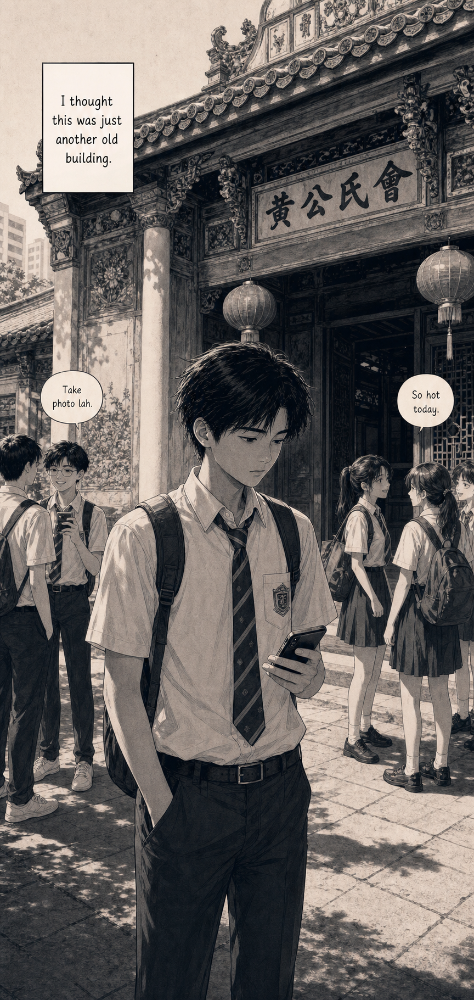
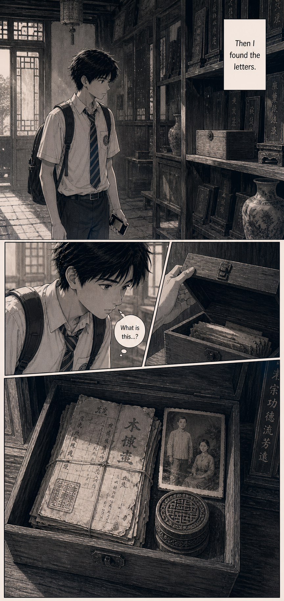
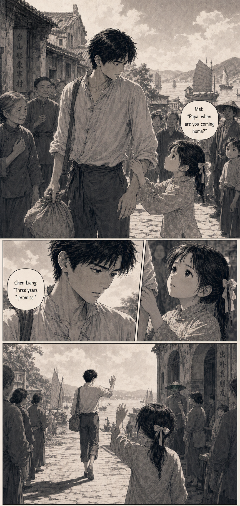
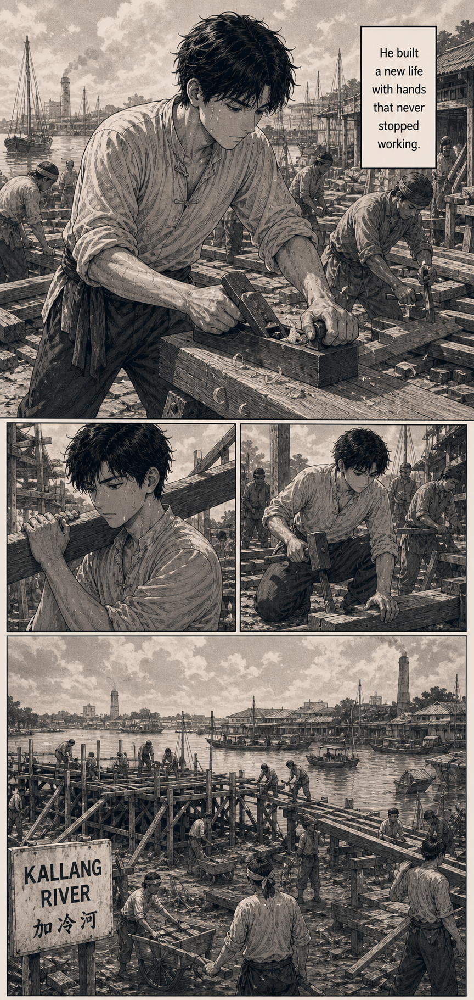
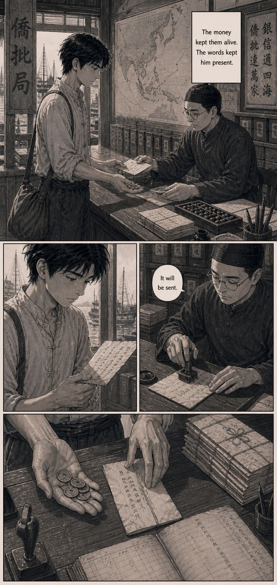
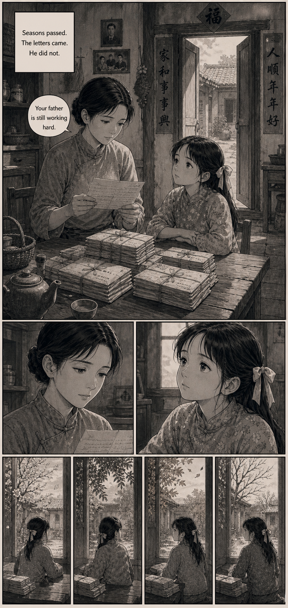
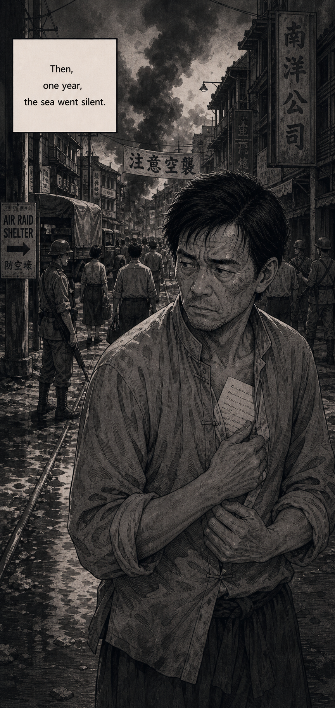
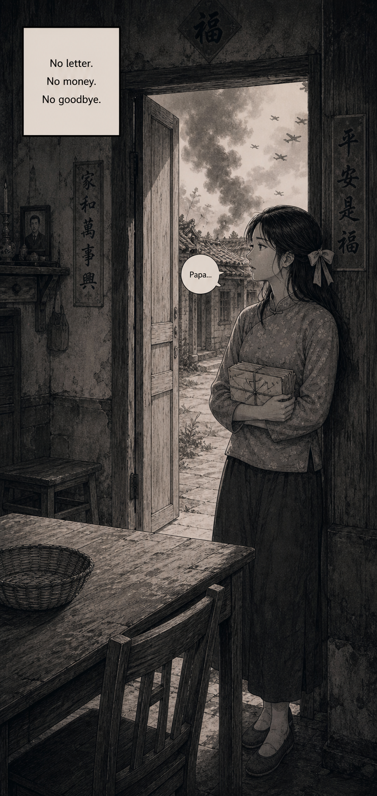
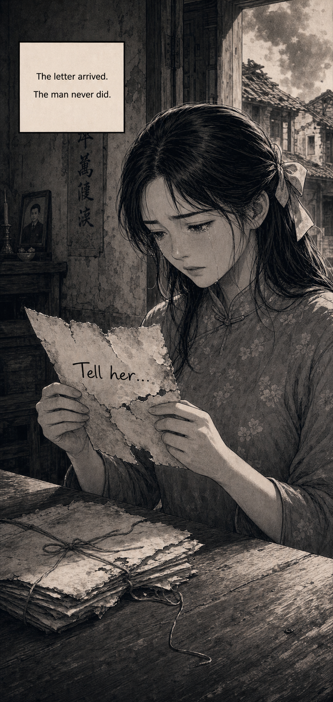
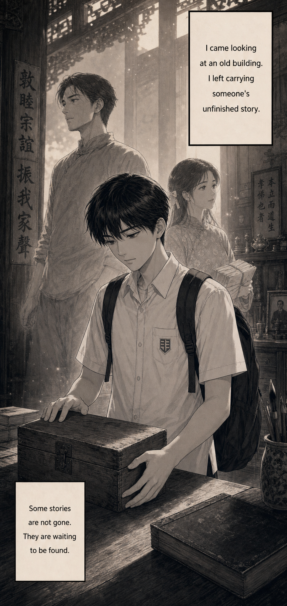

The Last Letter
A fictionalised manga one-shot inspired by Taishanese migration, qiaopi remittance letters, and clan associations. Read top to bottom in a single vertical scroll.

Page 1The Visit

Page 2The Box

Page 3The Promise

Page 4Nanyang

Page 5Qiaopi

Page 6Waiting

Page 7Silence

Page 8No News

Page 9The Last Letter

Page 10The Unfinished Story